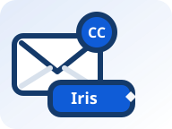
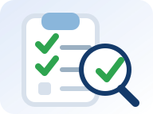

Bob:
AI that schedules meetings inside your email conversations
CC Iris on the thread and she coordinates availability, handles meeting rescheduling, and books the meeting automatically. No scheduling links, no tab switching, just a faster way to schedule meetings inside email.
- No scheduling links
- Multi-party coordination across participants
- Google and Microsoft calendar support
Want the details? Read what makes Liazon different.
Alice:
Iris:
How it works
CC Iris on the thread. She reads availability, coordinates attendees, and books the meeting.

1. CC Iris
Start or reply to the email thread and CC Iris. Ask for a meeting in plain English, without sending scheduling links.

2. Iris reads availability
Iris parses availability like “after 3” or “any afternoon” and matches it to connected calendars, tracking who has responded.
3. Iris coordinates and confirms
Iris negotiates across participants, handles time zones automatically, and understands replies like “this works” or “these are fine” in context.
4. Iris books the meeting
Once confirmed, Iris books the meeting and sends invites. Rescheduling is built in, with Google Calendar and Microsoft Outlook/365 support.
Note: It works even when people reply with shorthand like “this works” or “these are fine,” and it handles time zones automatically.
What makes Liazon different
Liazon is a conversation-native AI email scheduling assistant. Instead of sending scheduling links, you CC Iris into the email thread and she schedules meetings inside email conversations.
- Scheduling happens in the thread. Iris works where scheduling already happens: email. Everyone stays in context and there’s no “go pick a slot” detour. Learn more.
- Understands real replies. Iris parses availability in plain English and can interpret ambiguous responses like “this works” or “these are fine” based on the options under discussion.
- Multi-party coordination. Iris negotiates across participants, tracks confirmations, and moves the thread toward a final time without you managing the back-and-forth. Learn more.
- Rescheduling is first-class. When plans change, reply in the same thread and Iris runs meeting rescheduling automation end-to-end, including updated invites. Learn more.
- Time zones handled automatically. Iris keeps proposed times consistent for each attendee and avoids mistakes when teams are distributed or traveling.
- Google and Microsoft calendar support. Iris works with Google Calendar and Microsoft Outlook/365 so she can coordinate availability and book the meeting.
- Compare approaches. See how conversation-native scheduling differs from link-first and poll-based tools: Liazon vs Calendly vs Doodle.
Ready to schedule meetings inside email without scheduling links? View Liazon pricing.
Who is Liazon for?
Liazon is designed for professionals and teams who spend most of their workday coordinating meetings by email but want that overhead erased. It's ideal for:
- Busy executives: eliminate back-and-forth scheduling and let Iris manage meeting coordination inside your conversations.
- Startup founders: keep momentum in investor, partner, and customer threads without sending links or juggling calendars.
- Business development professionals: negotiate times seamlessly across multiple stakeholders without losing context.
- Talent acquisition and recruiting teams: coordinate interviews with candidates, hiring managers, and panels without manual follow-ups.
- Operations teams: streamline internal and cross-functional coordination with automatic scheduling and rescheduling.
- Sales and SaaS teams: work naturally inside sales conversations without switching tools or sending scheduling links.
- Executive assistants: augment your workflow by offloading the repetitive coordination and rescheduling to Iris.
Frequently Asked Questions
How does Iris read availability in email?
Iris parses availability written in plain English and matches it against connected calendars. She can work with constraints like “after 3,” “any afternoon,” and “not Tuesday.” See How it works for the full flow.
Does Iris support Google Calendar and Outlook?
Yes. Iris supports Google and Microsoft calendars (Outlook/365), which makes it easier to coordinate across organizations. She is built for calendar coordination, not just sending a link.
Can it handle rescheduling?
Yes. Meeting rescheduling is a first-class flow: reply in the same thread and Iris re-coordinates until a new time is confirmed and booked. Learn more on Meeting rescheduling software.
How does Iris manage time zones?
Iris handles time zones automatically during coordination and confirmation so proposed times remain consistent for each attendee. This helps avoid “is that your time or mine?” confusion in distributed threads.
Does it require scheduling links?
No. Iris coordinates scheduling inside the email thread, so you do not need scheduling links. Learn more on Schedule meetings without links.
Is email data stored?
Liazon is designed to coordinate scheduling from the email thread and connected calendars. If you have specific retention or security requirements, contact us and we can walk through how your data is handled.
Can it coordinate multiple participants?
Yes. Iris negotiates across participants, tracks confirmations, and keeps options consistent as replies come in. Iris is built for multi-party scheduling inside email conversations.
What happens if someone replies vaguely?
Iris can interpret ambiguous replies like “this works” or “these are fine” by mapping them to the options currently being discussed. If a reply is genuinely unclear, Iris asks a short follow-up to confirm.